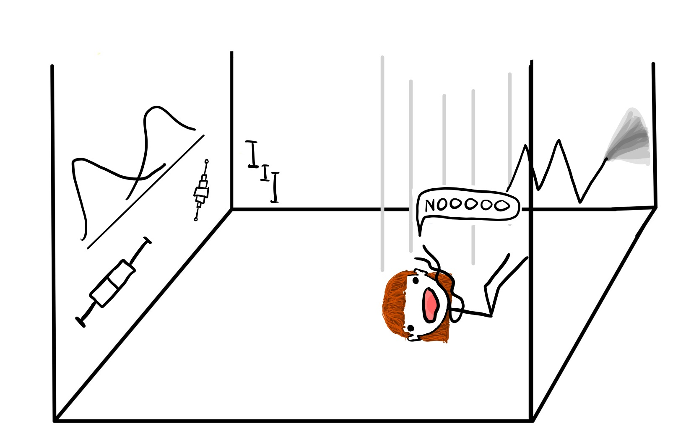
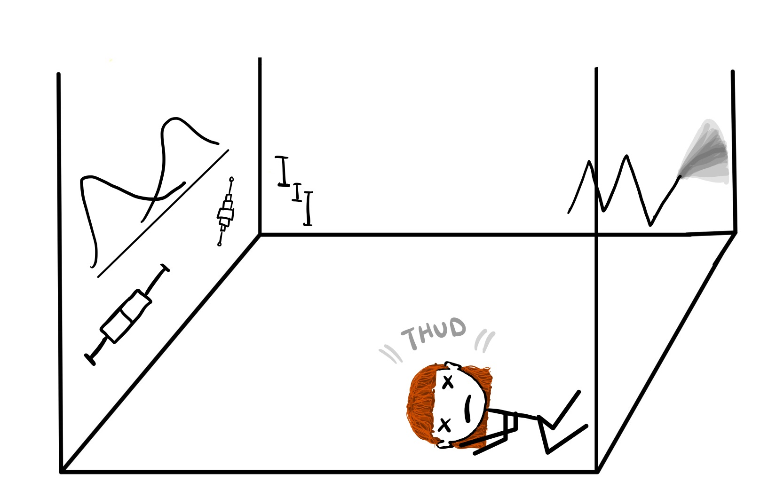
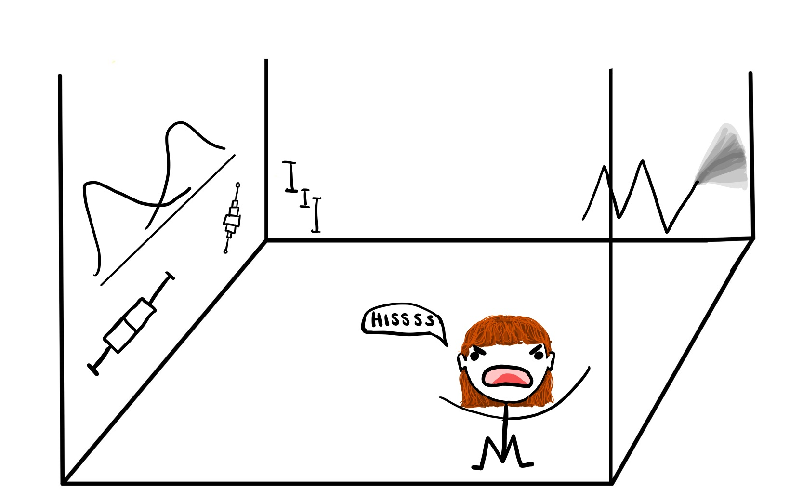
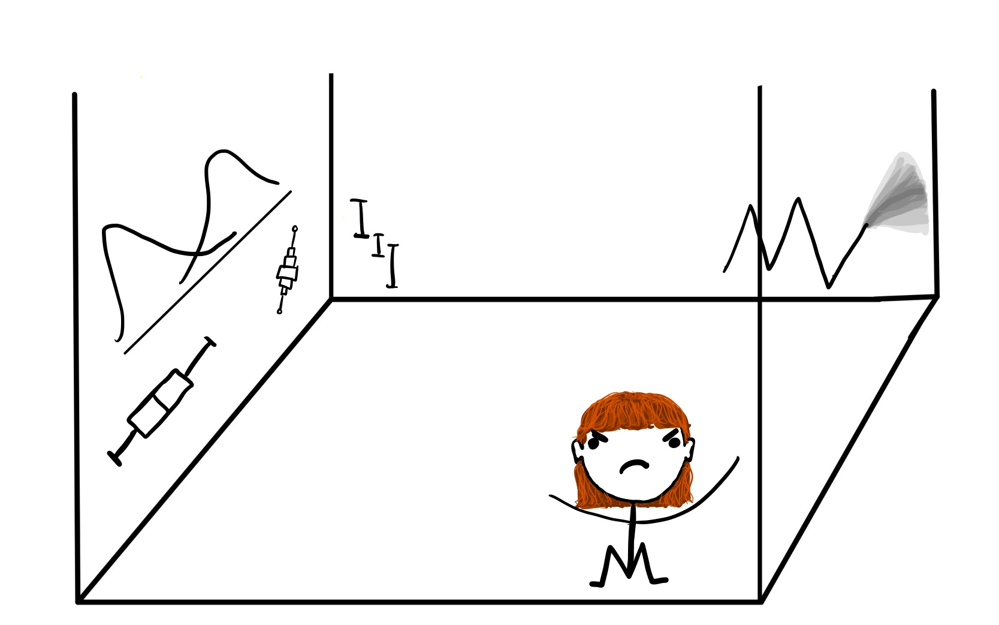
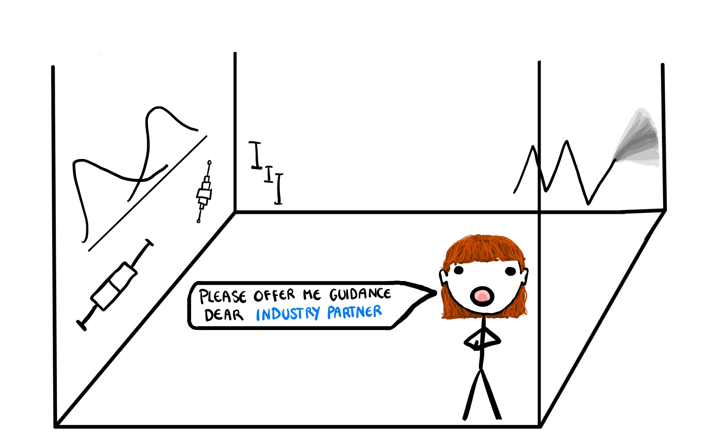
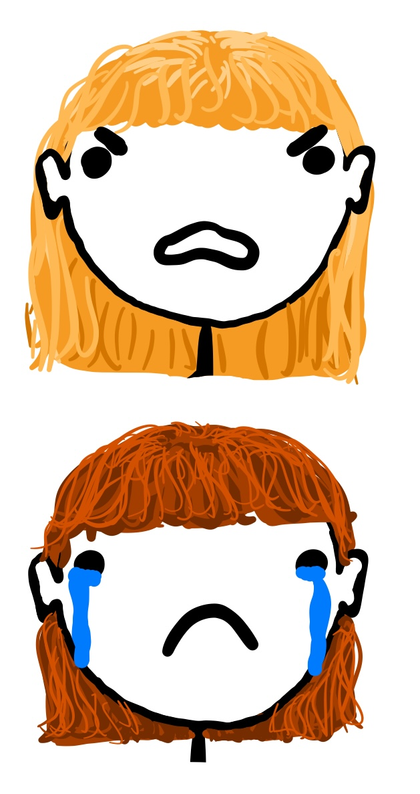
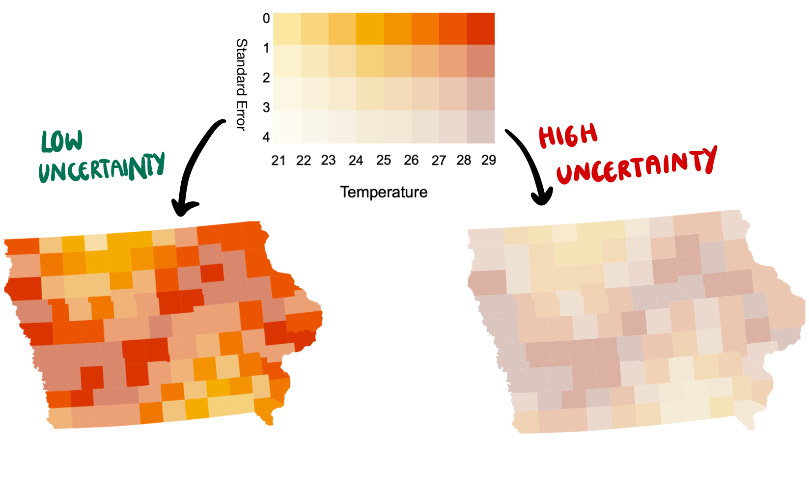

| Citizen Scientist Temperature Collection | ||
|---|---|---|
| Data from Iowa Counties | ||
| Scientist ID | County Name | Recorded Temp |
| #74991 | Lyon County | 21.1 |
| #22780 | Dubuque County | 28.9 |
| #55325 | Crawford County | 26.4 |
| #46379 | Allamakee County | 27.1 |
| #84259 | Jones County | 34.2 |
| #93495 | Lyon County | 20.4 |
| #81338 | Calhoun County | 27.6 |
| #18093 | Clayton County | 26.4 |
| #48149 | Winnebago County | 25.2 |
| #68821 | Fayette County | 28.8 |
Visualising Uncertainty with ggdibbler
Harriet Mason
Supervisors: Di Cook, Sarah Goodwin, Susan Vanderplus

Imagine you are me…
And you decide to do a PhD
And your project is externally funded
And you decide to do a PhD
And you decide to do a PhD
And you decide to do a PhD
And you decide to do a PhD
And you decide to do a PhD
And you decide to do a PhD
And you decide to do a PhD
Where the project is externally funded…
Where the project is externally funded…
Where the project is externally funded…
## Where the project is externally funded… ## And the topic is not well defined
And the topic is not well defined
An
An example I made up for this talk
- Reports that average temperatures in Iowa are very odd!
- Stumping climate scientists who are looking at it!!
- Need to understand this weird temperature issue!!!
An example I made up for this talk
(aside)
- We are going to look at variations of one plot
- The choropleth map
- It makes the ideas we are talking about easier to understand
- Concepts are more broadly appliciable than this one plot
Temperatures in Iowa
- Maintain privacy because doing science in Iowa is now a crime.
Calculating Estimates
| Average Temperature | |
|---|---|
| Estimates for Iowa Counties | |
| County Name | Mean Temperature |
| Adair County | 29.7 |
| Adams County | 29.6 |
| Allamakee County | 26.3 |
| Appanoose County | 22.8 |
| Audubon County | 27.6 |
| Benton County | 29.4 |
| Black Hawk County | 27.5 |
| Boone County | 29.4 |
| Bremer County | 29.2 |
| Buchanan County | 28.2 |
- Can you see the weird temperature trend?
Choropleth Map

Why communicate with a visualisation?
- “Ah I see”
- Utilises lizard brain
- Conveys a large amount of information at once

Fine if we are communicating with…
Harder if we are communicating with…

Oh no, a hurdle
Turns out mum is kind of right….
- We find out some citizen scientists are using some pretty old tools
- The standard error could be our estimate….
- or it could be about three times that.
- Does the spatial trend still exist in the high variance case?
Spot the difference

We Need to Include Uncertainty
- Failing to include uncertainty can be akin to fraud or lying
- Transparency increases trust
- Prevents bad actors from exploiting hidden variance
- Promotes better decisions

We are also communicating with…
How do we please my mother???
(and also me)
Uncertainty visualisation should…

- Reinforce justified signals
- We want my mum to trust the results
- Hide signals that are just noise
- I don’t want to see something that isn’t there
Solution: add an axis for uncertainty
Does this work? Not really
- Pro
- Included uncertainty and increased transparency
- Cons
- High uncertainty signal still very visible so I am still getting scammed
- Also sometimes creates false signals
- People can (and do) ignore the uncertainty
- 2D palette is harder to read
- Colour hues are not a simple 2D space
- Using saturation hurts accessibility
- High uncertainty signal still very visible so I am still getting scammed
Why doesn’t this work?
- Uncertainty is not just another variable…
- We do not have a high-dimension visualisation or basic heuristic problem
- Two dimensions = No interference
- Normal visualization = GOOD!
- Uncertainty visualization = BAD!
Signal suppression
- Visualising uncertainty as noise.
- The error (noise) should interfere with our reading of the temperature (signal)
- But only when the signal has high error
Solution: blend the colours together!
Does this work? Kind of…
- Pros
- Included uncertainty
- High uncertainty map has no visible trend
- Uncertainty hard to ignore
- Cons
- Still have 2D Colour palette
- Saturation hurts accessibility
- Standard error at which to blend colours is made up
- Impossible to align with hypothesis testing
- Still have 2D Colour palette
Solution: simulate a sample
Does this work? Almost!
- Pros
- Included uncertainty
- High uncertainty map has harder to read trend
- Uncertainty hard to ignore
- 1D colour palette
- No more weird colour space
- More accessible
- Cons
- Nightmare to make
A fun insight …
- Every single plot was a complete nightmare to make
- I suffered immensely making them
- I would wish this fate onto my worst enemy
- I am just a spiteful person
What exists - bivariate palettes
biscale- Very basic inbuilt colour scales
- Anything else requires you to manually design the palette
- Make every component separately then combine
Vizumap- similar issues to
biscale
- similar issues to
Ideal bivariate palette code
- Would like to control hue, saturation, and colour value separately
- Touch as few
ggplotsettings as possible
For example: biscale code
# Bivar (default plot)
library(biscale)
# Run it through a function that messes with your data
data <- bi_class(toy_temp_est,
x = temp_mean,
y = temp_se_low,
style = "quantile",
dim = 3)
# Manually make legend
legend <- bi_legend(pal = "PurpleOr",
dim = 3,
xlab = "Temperature",
ylab = "Standard Error",
size = 8)
# Make plot
plot <- data |>
ggplot() +
geom_sf(aes(fill = bi_class), color = "white", size = 0.1,
# Need to turn off legend of actual plot
show.legend = FALSE) +
bi_scale_fill(pal = "PurpleOr", dim = 3) +
labs(
title = "Trying to make the bivar palette",
subtitle = "a sorry attempt"
) +
bi_theme()
# Combine plot and legend using cowplot
finalPlot <- ggdraw() +
draw_plot(map, 0, 0, 1, 1) +
draw_plot(legend, 0.2, .65, 0.2, 0.2)For example: biscale plot
- I couldn’t even get it to work. This is the plot generated:

- Package hasn’t been updated in 3 years.
What exists - VSUP
- Nothing for VSUP specifically
- Would need to manually create one using a bivariate palette
What exists - pixelation map
Vizumapis a sample map option- Makes:
- Bivariate maps and Pixel (sample) maps
- Also glyph maps
- Package is designed specifically for uncertainty
- Issues
ggplot2flexibility is lost- e.g. you can only use one of three specific palettes
- Very computationally expensive
- A simple map can take over a minute to run
- Again, need to make every component separately then combine
- Makes:
Ideal pixelation map code
- the
ggplotrecognises the random variable input, and changes the visualisation accordingly - Again, touch as few
ggplotsettings as possible
Vizumap code
# load the package
library(Vizumap)
library(sf)
sf_use_s2(FALSE)
# Step 1: Format data using bespoke data formatting function
data <- read.uv(data = original_data,
estimate = "mean",
error = "standard_error")
# Step 2: Pixelate the shapefile
pixelation <- pixelate(geoData = geometry_data,
id = "ID",
pixelSize = 100)
# Step 3: Build pixel map
pixel_map <- build_pmap(data = data,
distribution = "normal",
pixelGeo = pixelation,
id = "ID",
# You can only use a set palette
palette = "Oranges"
border = geometry_data)
# Step 4: Print pixel map
view(pixel_map)Why is integrating uncertainty hard?
ggplot2was built on the grammar of graphics- Built to take in data, not distributions.
The grammar of graphics

ggdibbler
distributional input
| Average Temperature | |
|---|---|
| Estimates for Iowa Counties | |
| County Name | Temperature |
| Adair County | N(30, 0.82) |
| Adams County | N(30, 1) |
| Allamakee County | N(26, 0.3) |
| Appanoose County | N(23, 0.69) |
| Audubon County | N(28, 0.8) |
| Benton County | N(29, 2) |
| Black Hawk County | N(28, 0.13) |
| Boone County | N(29, 0.82) |
| Bremer County | N(29, 0.64) |
| Buchanan County | N(28, 3.2) |
distributionallets you store distributions in atibble- Riding those coat tails all the way to a CRAN submission
ggdibbler vs ggplot2

ggdibbler approach
ggdibbler Example

Wow, look at that software go
ggplot(toy_temp_dist) +
geom_sf_sample(aes(geometry=county_geometry, fill=temp_dist), linewidth=0, n=4) +
geom_sf(aes(geometry = county_geometry), fill=NA, linewidth=0.5, colour="white") +
theme_minimal() +
scale_fill_distiller(palette = "YlOrRd", direction= 1) +
xlab("Longitude") +
ylab("Latitude") +
labs(fill = "Temperature") +
ggtitle("A super cool and customised plot")
ggdibbler Future Plans
- Might implement VSUP into the package
- I half did it and then gave up
ggplot2was not designed for accessing colour space directly
- Implement
ggdibblervariations of othergeom_*()functions- e.g.
geom_point(),geom_distribution(), etc.
- e.g.
- Integrate
dibbleobject so thatgeom_sf()automatically doesgeom_sf_sample()if you pass a distribution in
General future plans
- Now that the graphics are easy to make, test if they work
- Our method thus far
- Looking at a graphic and going “neat”
- Not exactly rigorous science
Common Plot Evaluation Methods
- Confidence
- What is the mean of this variable? How certain are you?
- Errors conflated with poor plot design
- Value extraction
- What is the standard error of this estimate?
- Can’t directly ask about error in visualisation experiments
Issues with testing Signal Suppression
- Unlike in purely mathematical statistics, the “estimate” is not set beforehand
- You can extract multiple statistics from a single visualisation
- The “estimate” becomes whichever statistic you ask about
- Then “uncertainty visualisation” experiments will follow the same results as “normal” visualisation experiments
- Perceptual hierarchy, gestalt principles, etc.
- Need to develop methods that allow you to measure the effect of noise without directly asking about it
End
Appendix
Other Cases
- Visualisations where values are actually estimates
- e.g. Statistical summaries
- e.g. Using data from ABS (or other government organisation)
ggdist
Looking at the data